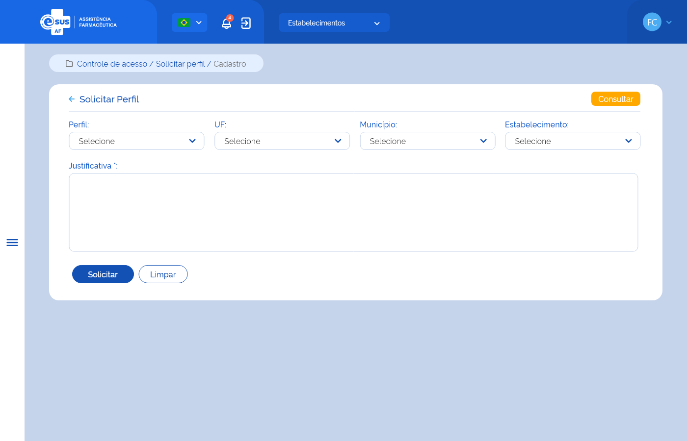

Especificação Técnica 008 - Solicitar Perfil
Descrição
Como usuário quero solicitar um perfil de acesso às funcionalidades do sistema, com suas respectivas permissões.
Protótipo 001

Elementos de Tela:
- Título da página – “Solicitar Perfil”
- “Seta” – M - retorna para a Tela Consultar Meus Perfis
- “Consultar” – BT - retorna para a Tela Consultar Meus Perfis
- Perfil* – A (50)
- UF – A (50)
- Município – A (50)
- Estabelecimento – A (50)
- Justificativa* – A (250)
- “Solicitar” – BT
- “Limpar” – BT
Legenda
TIPO: A = Alfanumérico, N = Numérico, D = Data, M = Imagem, BT = Botão, LK = Link, SU = Seleção Única, SM = Seleção Múltipla, AC = Autocomplete, * = Obrigatório.
Critérios de aceite
- A funcionalidade deve sempre estar disponível para acesso independente do usuário possuir ou não um perfil vinculado ao seu cadastro;
- O acesso à funcionalidade é dado através do menu lateral no item “Controle de Acesso”, subitem “Solicitar Perfil”, na tela “Consultar Meus Perfis” quando acionar a opção “Novo”;
- No campo ‘Perfil”, o sistema deve recuperar e apresentar os perfis com cadastro ativo na instância, exceto os perfis de “Instalador” e “Administrador”;
- No campo “UF” o sistema deve recuperar e apresentar as unidades federativas participantes da instância;
- No campo “Município” o sistema deve recuperar e apresentar a relação dos municípios vinculados à UF informada;
- No campo “Estabelecimento” o sistema deve recuperar e apresentar a relação dos estabelecimentos com cadastro ativo e vinculados à UF ou Município informados;
- O usuário ao realizar uma solicitação de permissão de acesso ao sistema, deve informar uma justificativa; RGN053
- O sistema deve permitir solicitar:
- Perfis de acesso iguais em estabelecimentos diferentes;
- Perfis de acesso para uma UF e/ou a um Município e/ou a um Estabelecimento;
- Perfis de acesso para UF a qual já possui permissão de acesso no Município e/ou Estabelecimento desta UF;
- Perfis de acesso para municípios distintos na mesma UF. RGN012
- O sistema não deve permitir solicitar mais de um perfil de acesso por estabelecimento; MSG087 RGN012
- Para solicitações de acesso é obrigatória a indicação de um estabelecimento exceto para os perfis de “Gestor”; RGN056
- Quando o usuário acionar a opção de “Solicitar”, o sistema deve verificar se o preenchimento das informações atende às validações listadas, efetivar a solicitação do perfil de acesso, gravar o estado do registro como “Ativo” e a situação como “Solicitado”, apresentar a mensagem de sucesso e retornar à tela de consulta aos meus perfis apresentando este registro como o primeiro da listagem; MSG088 RGN005
- Quando o usuário acionar a opção de “Voltar” ou “Consultar”, o sistema deve apresentar a mensagem de alerta ao usuário. Caso confirme a ação, retorna à tela de consulta aos meus perfis e não salva os dados preenchidos. Caso a ação não seja confirmada, permanece na tela de solicitar perfil; MSG006
- Quando o usuário acionar a opção de “Limpar”, o sistema deve limpar os dados preenchidos e permanecer na tela de solicitar perfil;
- O sistema deve gravar a data, hora e CPF e nome do usuário que a executou qualquer ação de alteração no estado do registro. RGN005